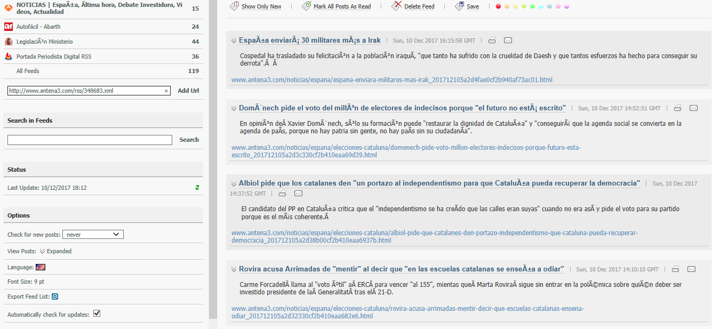

Ejercicio 1
Hay un gran número de ventajas que podemos tratar para usar RSS, la más llamativa seria su completa manipulación para recibir la información que el usuario quiera independientemente del tema puesto que la puede personalizar a su gusto. Tambien para uso móvil o ordenadores con limitada conexión puede ser de gran ayuda ya que el dispositivo no sera obligado a entrar a la pagina directamente y recibir todo el diseño de la misma si no que se limitara a leer un titulo y su contenido. No se tendra problema con el SPAM como si se puede tener con un correo electronico. Si se desea cancelar la suscripción se hara de forma rapida y no habra que hacer tediosos pasos para ello.
Ejercicio 2
http://www.boe.es/rss/
http://www.autofacil.es/servicios/rss/rss.jsp
http://www.antena3.com/rss/
http://www.periodistadigital.com/sindicacion/
Ejercicio 3
